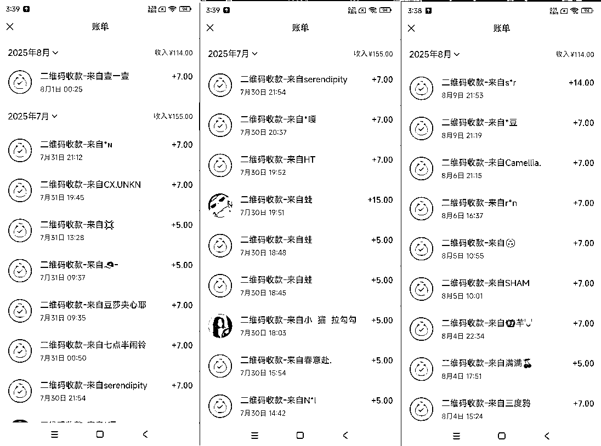
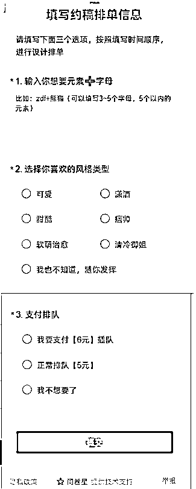

来源：https://c109zlmg0zn.feishu.cn/docx/YER6d0JqFovIJ9xP0gPcF6zTnWf
1、一些经历：22年10月入局小红书，之前一直在做情感项目，今年6月左右，正式转网站（当然之前一直在学和使用）
2、关于ai编程的一些经历
去年6月开始用gpt做简单编程
去年10月开始用cursor
今年3月参加web航海，然后又参加了深海圈
目前有一百来台手机，影刀rpa（八爪鱼）自动发布，不过最近停了，把所有事情都停掉了，这几天我新网站上线，给新网站做引流
网站绝对是很好地项目，我对于这个事情的判断是有三五年的大红利，能吃至少十年的好项目
All in
小程序——注册个体户（淘宝50元），咸鱼找小程序认证（50元）
签名设计——这是我拿到结果的网站，但是自动化做出来的效果并不是太好，并且需求大，类型多，就拿出来给大家做个完整的复盘案例
总数据结果
1、发了多少文章：15个账号，每天3篇，发了四到5天，第一天45篇发出，没有一个客户，访问网站的都没有，第二天一早就有了，所以大家发了就不要急，让子弹飞两三天
2、多少订单
3、挣了多少

（1）怎么找到别人的产品，或者已经有的交付的服务
所有的方法底层就是多刷，多看，也就是用心，记得小排老师刚开始学时候，他说多琢磨，大概也是类似的道理，多花时间，时间花哪里，哪里出结果
（2）怎么判断这个产品要不要做？能挣多少钱？会不会竞争太大？
核心的判断逻辑是——阶段，你是在快速测试，再想拿一个初步的反馈，还是你已经拿到过正反馈，要真正找一个长期做下去的项目了？
新手核心：正反馈——挣到一块钱
（3）找到之后。我怎么样把这个产品做出来，怎么样交付？
一个是多找同类型的对标，装作客户问一问
另一个是，和你真正的客户聊一聊【具体方法会在后面说】

做一个可以提交信息的表单，可以是一个真实的网站，也可以是一个问卷星，都行，重要的是，你要让客户在网站上操作
此时你会和客户沟通，手动交付，以及使用免费形式，或者其他形式进行简单采访
比如你这个图片准备做什么用？
你打分能打多少分
你觉得哪里不好，没达到你的满意
3和4可以是一起的，也可以是分开，如果是分开，实际上第三步应该是手动交付，
这时候你大概对交付的内容有了一些初步的了解，那就简单的做成一个可以正式交付的网站
功能可以简陋，但是至少要实现其中一个他们需要的功能。甚至不需要很好，只需要能达到，一小部分人的满意就可以
但是在此之前，有两件事情你要做，否则，你大概率做的产品，是自嗨
1.你要真的看了很多的对标。和很多的同行聊过，【这部分重点谈一下，什么是对标，为什么看对标，为什么有效】
你要知道，什么东西被验证过
世界规律作用到物体上，真实显现的样子（真实）
2.你真的做了一些手动的交付，和你的客户真实的去聊过，沟通过
1、注册三天后，正常就可以发布内容
2、严格意义上来说，小红书没有起号一说，正常发布优质内容，就是起号（起号，加权重，让平台更推荐）
3、账号就是消耗品（核心认知之一）
4、一个人可以注册15张手机卡，家人凑一凑几十张是有的（移动，联通，电信各五张）
账号是否异常：能否投薯条（发布3分钟后）
分阶段
（1）测试阶段
抄，纯抄，直接下载别人原图，后面加钩子
（2）可半原创，也可用（1）的方案，打法不同，方案不同，小红书对原创问题查，但是查的没有想象中严格，但是还是建议，分析爆款，然后做半原创内容，因为做内容的能力很重要——别自己瞎捉摸，去看看最近几个月的同行在发什么
严格意义上来说，我没有太在意过发布时间，小红书流量是分时间段推得，不是一小时给你推完，而是慢慢的推
发布数量，多多益善，建议是一天三篇，最近有新政策，一天发布不能太多（一月不超过100篇）
加钩子，评论区置顶，群，私聊
都行，最好的方案就是钩子，评论区置顶，群
小红书风控：矩阵，黑灰产
引流风控很低了
生财文章——武器库（明白老师）
流派：关键词seo，外链，投流，博主推，矩阵——把别人的交付网站化
1、抄：完全1：1复制
2、改：半原创
3、超越：从底层逻辑考虑，做真正的原创，不被同行过度干扰
想做一个项目，先看50个对标，和10个同行聊过
最后一句话，同各位共勉，创业就像爬山
开始的几十米，几百米，大家都会爬，甚至只需要依靠本能
到了半山腰，会有一批人觉得太累，停下了，觉得没力气了
在往上走，会有些人觉得还行，到这里把，自己很棒了
只有一小撮人，最后爬了上去，这一批人，只会是两种
一种是老手，经常爬山
一种是新手，他有信念，我tmd今天必须爬上这个山
信念才是真正的核心，是所有的驱动的源头
1、看50篇风向标
2、找10个你觉得会有需求的词，去搜，然后看下拉词（关键词承载）
3、把每个下拉词，都搜一搜，把每个话题都点进去看看
4、最重要的，去做，在做中接受反馈，获得新信息，在调整